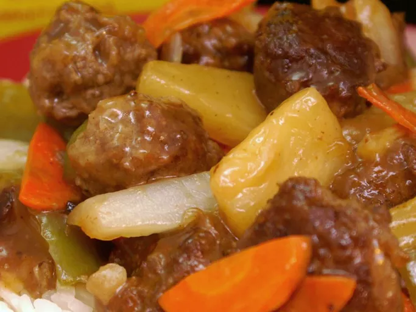

I grew up in Japan, and my Mother got this recipe from some Catholic nuns there during the 50's.
It's been a family favorite ever since. If you're a vegetarian, try this sauce with vegetables only. It's wonderful that way also!
Submitted by QUIKSMYLE
Ingredients
- 1 pound ground beef
- 1 egg
- 1 tablespoon cornstarch
- 1 teaspoon salt
- 4 tablespoons diced onion
- 1 pinch ground black pepper
- 1 tablespoon vegetable oil
- 1 cup pineapple juice
- 3 tablespoons cornstarch
- 1 tablespoon soy sauce
- 3 tablespoons distilled white vinegar
- 6 tablespoons water
- ½ cup granulated sugar
- 4 slices fresh pineapple, cut into pieces
- 1 large green bell pepper, cut into thin strips
- ¼ carrot, thinly sliced
- ⅓ onion, cut into wedges and separated
Recipe
- In a mixing bowl, combine the ground beef, egg, cornstarch, salt, diced onion and pepper.
Form into 1-inch meatballs; you'll get about 20 total.
- In a large skillet over medium heat, brown the meatballs; drain fat and set aside.
- Heat the oil in a large saucepan over low heat.
Pour in the pineapple juice and simmer for a few minutes.
- In a small bowl, combine the 3 tablespoons of cornstarch, soy sauce, vinegar and water. Stir until smooth and pour into the pineapple juice.
Add the sugar and simmer until thickened, stirring constantly.
- Place the meatballs, pineapple pieces, green pepper, carrot and onion into the sauce mixture. Heat thoroughly.
home